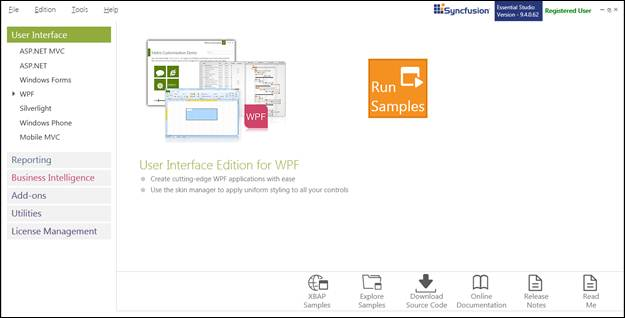
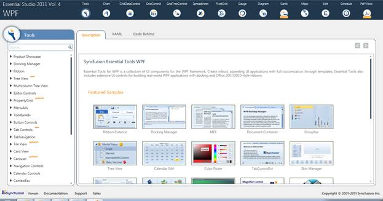
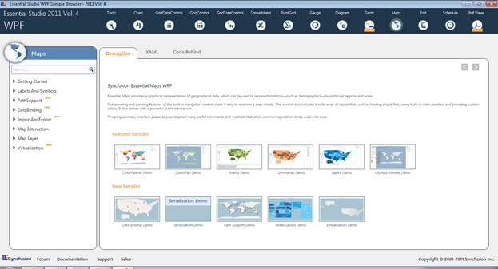

Sample Installation Location
Essential Maps for WPF samples are installed under the following location
C:\Syncfusion\EssentialStudio\<Version Number>\WPF\Maps.WPF\Samples
Viewing Samples
To view the samples:
1. Click Start-->All Programs-->Syncfusion-->Essential Studio < v9.4.0.62> -->Dashboard.
The Essential Studio Enterprise Edition window is displayed.

Figure 2: Essential Studio Dashboard
The User Interface Edition panel is displayed by default.
2. Click the RunSamples link. The Essential Studio WPF Edition sample browser is displayed.

Figure 3: WPF Edition Sample Browser
3. Tools WPF sample browser will be displayed by default. Select Maps from the Panel displayed at the top of the page.

Figure 4: Essential Maps for WPF Sample Browser
4. Select any sample from the samples provided and browse through the features.
Source Code Location
The default location of the Essential Maps WPF source code is:
[System Drive]:\Program Files\Syncfusion\Essential Studio\[Version Number]\WPF\Maps.WPF\Src